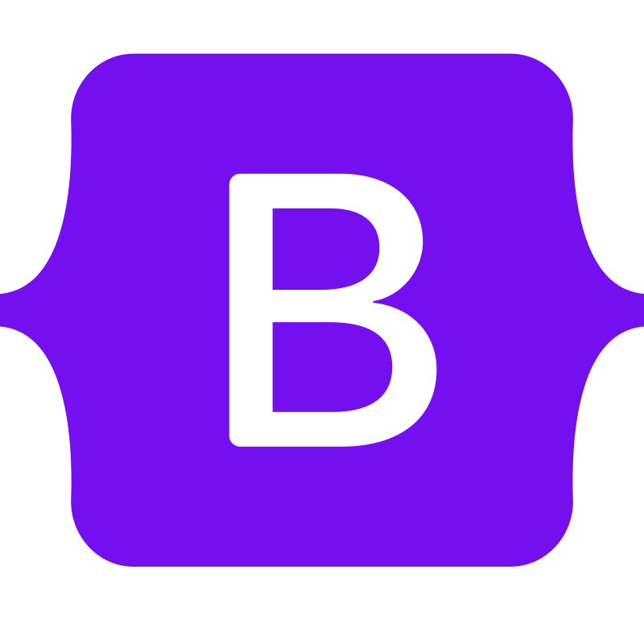

Web Development
| Skill/Language | Proficiency |
|---|---|

HTML |
Intermediate 1-2 Years of experience |

Javascript |
Intermediate 1-2 Years of experience |
 CSS |
Intermediate 1-2 years of experience |
As a web developer it is obvious that you need to have the basic understanding of HTML, CSS and Javascript. It is the first step in a web development.
Version Control
| Skill/Language | Proficiency |
|---|---|
 Github |
Intermediate 0-1 Years of experience |
 Git |
Beginner 0-1 Years of experience |
I am new in using version control system. As of my understanding version control system is known to be important when to track changes that has been push to the website repository. I mainly used github pages to deploy my website because it is free and easy to use.
Libraries/Framework
| Libraries | Proficiency |
|---|---|
Bootstrap5 |
Beginner 0-1 Years of experience |
 React.js |
Beginner 0-1 Years of experience |
 Jquery |
Beginner 0-1 Years of experience |
Using a framework and libraries is pretty new to me. However, knowing the importance of standardization in programming I will try to learn more about framework and libraries.
Database
| Skill | Proficiency |
|---|---|
 MySQL |
Beginner 0-1 Years of experience |
 PHP |
Intermediate 0-1 Years of experience |
 Xampp |
Intermediate 0-1 Years of experience |
A robust database is indispensable in backend development. I have a solid foundation in database management and have successfully executed projects that involve database operations in the past. However, there has been a considerable gap in my recent database usage
Other
| Skill | Proficiency |
|---|---|
 Python |
Beginner 0-1 Years of experience |
 VB.net |
Intermediate 1-2 Years of experience |
I learn some of this language in order to broaden my understanding in programming. I can consider this skill I learn as a hobby. As the saying said programming is a lifelong journey.